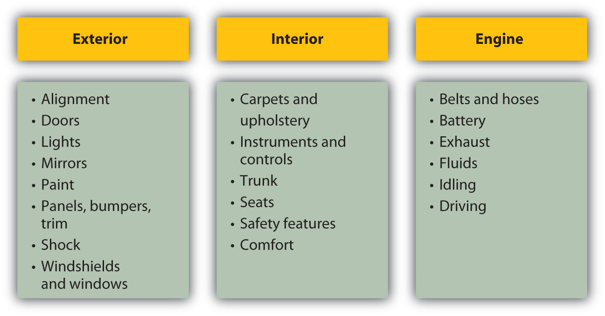

Many adults will buy a car several times during their lifetimes. A car is a major purchase. Its price can be as much as or more than one year’s disposable income. Its annual operating costs can be substantial, including the cost of fuel, legally mandated insurance premiums, and registration fees, as well as maintenance and perhaps repairs and storage (parking). A car is not only a significant purchase, but also an ongoing commitment.
In the United States, people spend a considerable amount of time in their cars, commuting to work, driving their children to school and various activities, driving to entertainment and recreational activities, and so on. Most people want their car to provide not only transportation, but also comforts and conveniences. You can apply the purchasing model, described in this chapter, to the car purchase.
First, you identify the need: What is your goal in owning a car? What needs will it fulfill? Here are some further questions to consider:
Your answers to these questions will help you identify the product you want.
Answering these questions can help identify the attributes you value in a car, based on how you will use it. Cars have many features to compare. The most critical (in no particular order) are shown in Figure 8.9 "Automobile Attributes and Relevance".
Figure 8.9 Automobile Attributes and Relevance

All these attributes affect price, and you may think of others. Product attribution scoring can help you identify the models that most closely fit your goals.
Mary lives on a dirt road in a rural area; she drives about 18,000 miles per year, commuting to her job as an accountant at the corporate headquarters of an auto parts chain and taking her kids to school. She is also a pretty good car mechanic and does basic maintenance herself.
John lives in the city; he walks or takes a bus to his job as a market researcher for an ad agency, but keeps a car to visit his parents in the suburbs. He drives about 5,000 miles per year, often crawling in traffic. All John knows about a car is that the key goes in the ignition and the fuel goes in the tank.
John and Mary would rate these attributes very differently, and their scoring of the same models would have very different results.
Mary may value fuel efficiency more, as she drives more (and so purchases more fuel). Driving often and with her children, she may rank size, safety, and entertainment features higher than John would, who is in his car less frequently and alone. Mary relies on the car to get to work, so reliability would be more important for her than for John, who drives only for recreational visits. But Mary also knows that she can maintain and repair some things herself, which makes that less of a factor.
Car attributes are widely publicized by car dealers and manufacturers, who are among the top advertisers globally year after year.Advertising Age, “Global Marketers: Top 100,” December 8, 2007, http://adage.com/images/random/datacenter/2008/globalmarketing2008.pdf (accessed April 1, 2009). You can visit dealerships in your area or manufacturers’ Web sites. Using the Internet is a more efficient way of narrowing your search. Specialized print and online magazines, such as Car and Driver, Road and Track, and Edmunds.com, offer detailed discussions of model attributes and their actual performance. Consumer Reports also offers ratings and reviews and also provides data on frequency of repairs and annual maintenance costs.
You want to be sure to consider not only the price of buying the car, but also the costs of operating it. Fuel, maintenance, repair, insurance, property taxes, and registration may all be affected by the car’s attributes, so you should consider operating costs when choosing the product. For example, routine repairs and maintenance are more expensive for some cars. A more fuel-efficient car can significantly lower your fuel costs. A more valuable car will cost more to insure and will mean higher property (or excise) taxes. Moreover, the costs of fuel, maintenance, insurance, registration, and perhaps property tax on the car will be ongoing expenses—you want to buy a car you can afford and afford to drive.
If you are buying a new car, you know its condition, and so you can predict annual maintenance and repair costs and the car’s longevity by the history for that model. Depending on how long you expect to own the car, you may also be concerned with its predicted resale value.
Used cars are generally less expensive than new. A used car has fewer miles left in it. Its condition is less certain: you may not know how it has been driven or its repair and maintenance history. This makes it harder to predict annual maintenance and repair costs. Typically, since it is already used when you buy it, you expect little or no resale value. You can gain a significant price savings in the used car market, and there are good used cars for sale. You may just have to look a bit harder to find one.
The National Automobile Dealers Association (NADA) offers a checklist for used vehicle inspection when buying a used car. The NADA also publishes guidebooks on used car book values (see http://www.nadaguides.com). Items to inspect in your exterior, interior, and engine checks are outlined in Figure 8.10 "Used Car Buyer’s Checklist".
Figure 8.10 Used Car Buyer’s ChecklistNational Automobile Dealers Association, http://www.nadaguides.com (accessed November 23, 2009).
The condition of exterior and interior features can indicate past accidents, repairs, or lack of maintenance that may increase future operating expenses, or just driving habits that have left a less attractive or less comfortable vehicle.
Services like Carfax (http://www.carfax.com) provide research on a vehicle’s history based on its VIN (vehicle identification number), including any incidence of accidents, flooding, frame damage, or airbag deployment, the number and type of owners (was it a rental or commercial vehicle?), and the mileage. All these events affect your expectations of the vehicle’s longevity, maintenance and repair costs, resale value, and operating costs, which can help you calculate its value and usefulness.
Unless you are an expert yourself, you should always have a trained mechanic inspect a used vehicle before you buy it. With cars, as with any item, the better informed you are, the better you can do as a consumer. Given the cost of a car and its annual expense, there is enough at stake with this purchase to make you cautious.
New cars are sold through car dealerships. The dealer has a contract with the manufacturer to sell its cars in the retail market. Dealers may also offer repair and maintenance services as well as parts and accessories made especially for the models it sells.
New car dealers may also resell cars that they get as trade-ins, especially of the same models they sell new. Used car dealers typically buy cars through auctions of corporate, rental, or government cars.
Individuals selling a used car can also do so through networking—in an online auction such as eBay, a virtual bulletin board such as Craig’s List, or the bulletin board in the local college snack bar. Dealers will have more information about the market, especially about the supply of cars and price levels for them.
Some people prefer a new car, with its more advanced features and more certain quality, but a used car may be a viable substitute for many purchasers. Many people buy used cars while their incomes are lower, especially in the earlier stages of their adult (working) life. As income rises and concern for convenience, reliability, and safety increases with age and family size, consumers may move into the new car market.
While they are two very different markets, the markets for new and used cars are related. Supply of and demand for new cars affect price levels in the new car market, but also in the used car market. For example, when new car prices are high, more buyers seek out used cars and when low, used car buyers may turn to the new car market.
Demand for cars is affected by macroeconomic factors such as business cycles and inflation. If there is a recession and a rise in unemployment, incomes drop. Demand for new cars will fall. Many people will decide to keep driving their current vehicle until things pick up, unwilling to purchase a long-term asset when they are uncertain about their job and paycheck. That slowing of demand may lower car prices, but will also lower the resale or trade-in value of the current vehicle. For first-time car buyers, that may be a good time to buy.
If there is inflation, it will push up interest rates because the price of borrowing money rises with other prices. Since many people borrow when purchasing a car, that will make the borrowing, and so the purchase, more costly, which will discourage demand.
When the economy is expanding, on the other hand, and inflation and interest rates are low, demand for new cars rises, pushing up prices. In turn, prices are kept in check by competition. As demand for new cars rises, demand for used cars may fall, causing the supply of used cars to rise as more people trade in their cars to buy a new one. They trade them in earlier in the car’s life, so the quality of the used cars on the market rises. This may be a good time to buy a used car.
The cost of a car is significant. Car purchases usually require financing through a loan or a lease. Each may require a down payment, which you would take out of your savings. That creates an opportunity cost of losing the return you could have earned on your savings. You also lose liquidity: you are taking cash, a liquid asset, and trading it for a car, a not-so-liquid asset.
Your opportunity cost and the cost of decreasing your liquidity are costs of buying the car. You can reduce those costs by borrowing more (and putting less money down), but the more you borrow, the higher your costs of borrowing. If you trade in a vehicle, dealers will often use the trade-in value as the down payment and will sell the car to you with “no money down.”
Car loans are available from banks, credit unions, consumer finance companies, and the manufacturers themselves. Be sure to shop around for the best deal, as rates, maturity, and terms can vary. If you shop for the loan before shopping for the car, then the loan negotiation is separate from the car purchase negotiation. Both may be complex deals, and there are many trade-offs to be made. The more separate—and simplified—each negotiation is, the more likely you will be happy with the outcome.
Loans differ by interest rate or annual percentage rate (APR) and by the time to maturity. Both will affect your monthly payments. A loan with a higher APR is costing you more and, all things being equal, will have a higher monthly payment. A loan with a longer maturity will reduce your monthly payment, but if the APR is higher, it is actually costing you more. Loan maturities may range from one to five years; the longer the loan, the more you risk ending up with a loan that’s worth more than your car.
Rebecca buys a used Saturn for $6,000, with $1,000 cash down from savings and a GMAC-financed loan at 7.2 APR, on which she pays $115 a month for forty-eight months. She could have gotten a twenty-four-month loan, but wanted to have smaller monthly payments. After only twenty-five months, she totals her car in a chain collision but luckily escapes injury. Now she needs another car. The Saturn has no trade-in value, her insurance benefit won’t be enough to cover the cost of another car, and she still has to pay off her loan regardless. Rebecca is out of luck, because her debt outlived her asset. If your debt outlives your asset, your ability to get financing when you go to replace that vehicle will be limited, because you still have the old debt to pay off and now are looking to add a new debt—and its payments—to your budget. Rebecca will have to use more savings and may have to pay more for a second loan, if she can get one, increasing her monthly payments or extending her debt over a longer period of time.
An alternative to getting a car loan is leasing a car. Leases are a common way of financing a car purchase. A leaseA rental agreement used as a form of financing for automobile purchases. is a long-term rental agreement with a buyout optionA feature of a lease that offers the option to buy the asset financed by the lease at the end of the lease term. at maturity. Typically, at the end of the lease, usually three or four years, you can buy the car outright for a certain amount, or you can give it back (and buy or lease another car), which removes the risk of having an asset that outlives its financing. Leases specify an annual mileage limit, that is, the number of miles that you can drive the car in a year before incurring additional costs. Leases also specify the monthly payment and requirements for routine maintenance that will preserve the car’s value.
So, lease or borrow? The price of the car should be the same regardless of how it is financed—the car should be worth what it’s worth, no matter how it is paid for. The cost of borrowing, in percentage terms, is the interest rate or APR of the loan. The costs of leasing, in dollars, are the down payment, the lease payments, and the buyout. Since the price of the car itself is the same in either case, the present value of all the lease costs should be the same as the price of the car. You can use what you know about the time value of money to calculate the discount rate that produces that price; that is the equivalent annual cost of the lease, in percentage terms.
For example, you want to buy a car with a price of $19,000. You can get a car loan with an APR of 6.5 percent from your bank. You are offered a lease requiring a down payment of $2,999, monthly payments of $359 for three years, and a final buyout of $5,000. The APR of the lease is actually 5.93 percent, which would make it the cheaper financing alternative.
In general, the longer you intend to keep the car, the less sense it makes to lease. If you typically drive a car “into the ground,” until it costs more to repair than replace it, then you are better off borrowing and spreading the costs of financing over a longer period. On the other hand, if you intend to keep the car only for the term of the lease and not to exercise the buyout option, then it is usually more cost effective to lease. You also need to consider whether or not you are likely to stay within the mileage limits of the lease, as the mileage penalties can add significantly to your costs.
Some people will say that they like to borrow and then “own” in order to have an asset that can store value or “build equity.” Given the unpredictable nature of the used car market, however, a car is really not an asset that can be counted on to store value. Thinking of a car as something that you will use up (although over several years) rather than as an asset you can preserve or save will help you make better financial decisions.
When you are buying a car, you want to minimize the cost of both the car and the financing. If you are purchasing both the car and the financing from the same dealer, you should be careful to discuss them separately. Car dealers, who offer loans and leases as well as cars, often combine the three discussions, offering a break on the financing to make the car more affordable, or offering a break on the car to make the financing more affordable. To complicate matters further, they may also offer a rebate on a certain model or with a certain lease. The more clearly you can separate which costs belongs to which—the car or the financing—the more clearly you can understand and minimize your costs.
A car purchase requires significant prepurchase activities. Once you have identified and compared appropriate car attributes, a seller, and financing options, all you have to do is drive away, right? Not quite.
Car purchases are one instance where the buyer is expected to haggle over price. The sticker price is the manufacturer’s suggested retail price (MSRP)The “sticker price” for an item. for that vehicle model with those features. Dealers negotiate many of the factors that ultimately determine the value of the purchase: the optional features of the car, the warranty terms, service discounts on routine maintenance, financing terms, rebates, trade-in value for you old car, and so on.
As more of these factors are discussed at once, the negotiation becomes more and more complex. You can help yourself by keeping the negotiations as simple as possible: negotiate one thing at a time, settle on that, and then negotiate the next factor. Keep track of what has been agreed to as you go along. When each factor has been negotiated, you will have the package deal.
Your ability to get a satisfying deal rests on your abilities as a negotiator. For this reason, many people who find that process distasteful or suspect that their skills are lacking find the car purchasing process distasteful. Dealers know this, and some will try to attract customers by being more transparent about their own costs and about prices. Some even promise the “no-dicker sticker” sale with no haggling over price at all.
As with any product in any market, the more information you have, the better you can negotiate. The more thorough your prepurchase activities, the more satisfying your purchase will be.
While you own the car, you will maximize the benefits enjoyed by operating the vehicle safely and by keeping it in good condition. Routine maintenance (e.g., replacing fluids, rotating tires) can ensure the quality and longevity of your vehicle. New cars come with owner’s manuals that detail a schedule of service requirements and good driving practices for your vehicle. You will be required to keep the car legally insured and registered with the state where you reside, and you must maintain a valid license to drive.
New cars, and some used cars, are sold with a warrantyA manufacturer’s guarantee of product performance for a period of time., which is a promise about the quality of the product, made for a certain period of time. The terms and covered repair costs may vary. You should understand the terms of the warranty, especially if something covered should need servicing, so that you know what repairs you may be charged for. The manufacturer, and sometimes the seller, issues the warranty. If you have questions about the warranty after purchasing, it may be best to contact the manufacturer directly.
If you are dissatisfied with your purchase (and the fault seems to be with the car), your first step should be a conversation with your dealer. If the problem is not addressed, you can contact the automobile company directly; its Web site will provide you with a customer service contact. If the dealer and the manufacturer refuse to make good, you should contact your state’s consumer affairs division in the attorney general’s office. In some states, there are entire state agencies or departments devoted to auto purchases.
For his first car Ray bought a ten-year-old coupe with only 60,000 miles on it for a price that seemed too good to be true. The seller said the good price was in exchange for getting payment in full in cash. The car broke down right away, however, and within two weeks died of a cracked block. When Ray complained, the seller claimed he didn’t know about the cracked block and pointed out that there was no warranty on the car, so Ray was out of luck. Fortunately, Ray had read that a defective car, referred to as a “lemon,” is covered under laws that protect consumers who unknowingly purchase a car that proves to be defective. Lemon lawsFederal and state laws protecting consumers against products that repeatedly fail to meet standards of performance. The federal Magnuson-Moss Warranty Act was enacted in 1975. regulate sales terms, purchase cancellation conditions, and warranty requirements. These laws are enforced on both the federal and state level in the United States. Other consumer protection laws apply specifically to motor vehicles and vary by state. Ray learned that laws in his state include used cars as well as new ones, and when he told the seller, he was able to get most of his cash back.